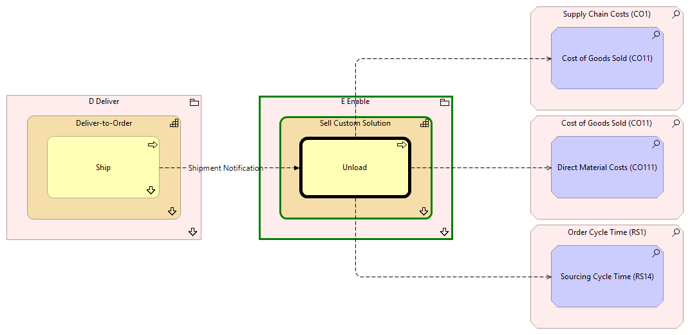

Unload - Context
(
)

generated_by
build_archi_xml.py::gen_proc_node_context_view
generator_path
pedro/capabilities/build_archi_xml_assign/build_archi_xml_assign.py
run_at
2026-10-19T21:06:35
view_type
process_context
E Enable
Sell Custom Solution
Unload
Sell Custom Solution - Processes
E Enable - Processes
D Deliver
Deliver-to-Order
Ship
Ship - Context
Deliver-to-Order - Processes
D Deliver - Processes
Supply Chain Costs (CO1)
Cost of Goods Sold (CO11)
Cost of Goods Sold (CO11)
Direct Material Costs (CO111)
Order Cycle Time (RS1)
Sourcing Cycle Time (RS14)
Unload
Cost of Goods Sold (CO11)
Unload
Direct Material Costs (CO111)
Unload
Sourcing Cycle Time (RS14)
Shipment Notification
Ship
Unload